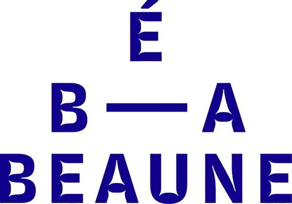

En seoncde, je suis inscrit a l'atelier Court Métrage de l'école des beaux arts de beaune. Cet atelier, en partenariat avec les ateliers du Cinéma de Claude Lelouch, m'a permis de me familiariser avec des appareils tels que des caméra Blackmagic, un Steadicam DJI, des objectifs Canon professionnel et autre petit bijoux de technologie. LE partenariat avec les ateliers du cinéma était une vraie chance pour ce cours, car il nous permettait a la fois d'exploiter leur locaux (comme leur Studio Marey, contenant une véritable réplique d'appartement chalonnais) et de discuter avec leur étudiant et professeur, tel que Rémi Bergman.
Grace a cet atelier, j'ai même pu rencontrer Claude Lelouch.
Cet atelier m'a aussi permis de faire mes première diffusion sur grand écran, avec leur lot de plantage (un mauvais mixage, un grain trop présent, beaucoup d'erreur qui m'ont fait gagner en expèrience, mais aussi en prudence.
Grâce a notre professeur, Jean-Pierre Carnet j'ai completer mes bases de cadrage me provenant de la photographie, me permettant de les appliquer la vidéo, avec un caméra d'une excellente qualité qui n'a rien a envier a mon Smartphone. J'ai aussi été l'assistant monteur sur le premier court métrage que nous avons réalisé ( nous en faisions un par an), me permettant de m'exercer a un travail en équipe semi-professionnel. Cela a aussi été ma première expérience sur Première Pro, sur leur banc de montage composé de Mac, ce qui, pour moi qui ait toujours utilisé des pc Windows, est une expérience enrichissante